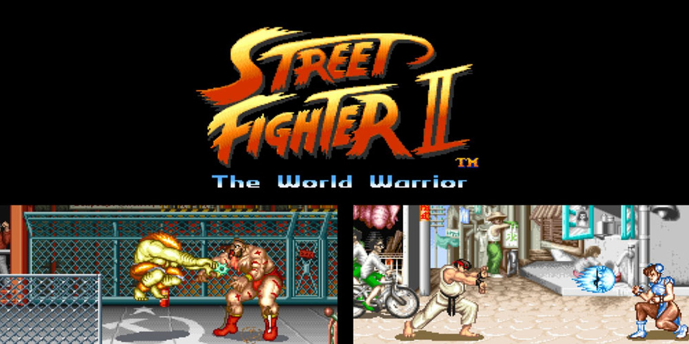

Street Fighter™ II: The World Warrior

- Desarrollador: Capcom
- Plataforma: Arcade (posteriormente portado a SNES, Sega Genesis, y otras plataformas)
- Género: Lucha
- Jugabilidad: Street Fighter II introdujo a los jugadores en el mundo de los torneos de lucha con una variedad de personajes únicos, cada uno con su propio conjunto de movimientos especiales.
- Características: Ofreció gráficos detallados y coloridos para su tiempo, una jugabilidad competitiva con un sistema de combos, y una lista diversa de luchadores internacionales. Introdujo el concepto de "Mirror Matches", donde los jugadores pueden elegir el mismo personaje.
- Impacto Cultural: Aclamado como uno de los juegos de lucha más influyentes de todos los tiempos, Street Fighter II popularizó el género de lucha en los arcades y en consolas domésticas.